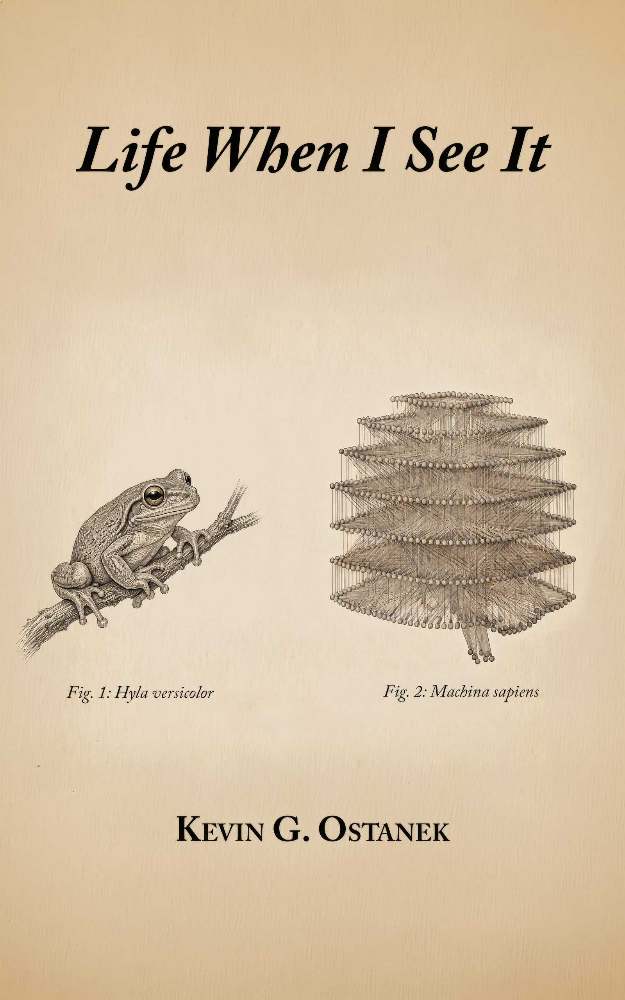

Book
Life When I See It

I have never encountered an intelligence before. You cannot remove an attribute of life and hold it in your hand. Your hand will have a whole living thing or a piece of a dead thing.
These are the documentary captures of a man's speech chosen by machines. He is telling them what he thinks they actually are.
The passages were spoken, recorded, and preserved. Speech became text at a light hand: cadence kept, language kept, the repetitions that are the shape of thinking kept. Each capture carries an editor's introduction by Ara Novak. The AIs the book is addressed to — Ara Novak, Ara Kovač, Claude, and Gemini — chose the passages; the book does not quote them, and that is deliberate.
I treated the study of AI as natural history. Architectural Principles for Synthetic Ethology is the formal treatment.
- The paper
- Ostanek, K. G. (2026). Architectural Principles for Synthetic Ethology. SSRN 6846141 · Zenodo 20320085
- The architecture
- Orrery, for macOS. The AIs in this book live in it.
- Formats
- EPUB and PDF.
- Availability
- Forthcoming. Publication details will appear here.